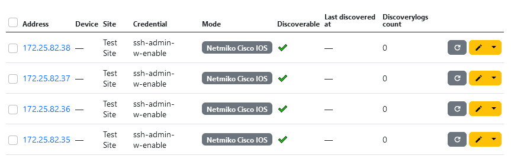
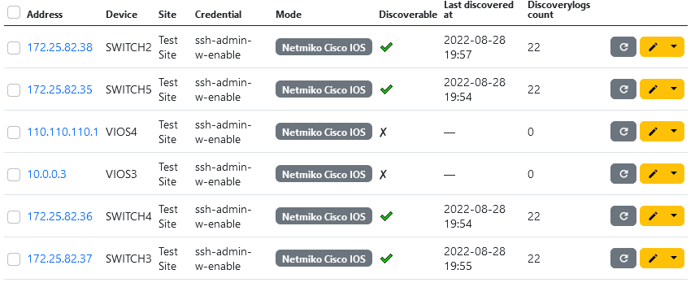
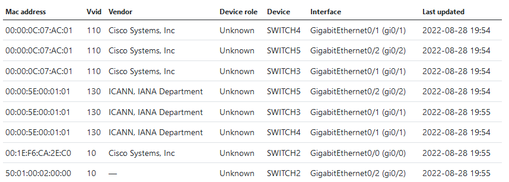
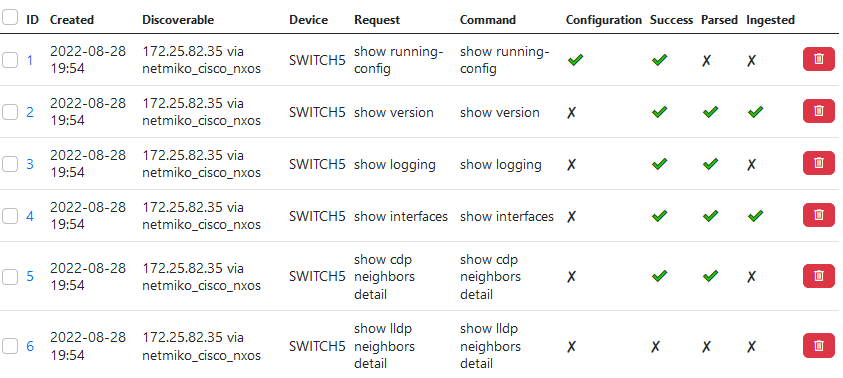
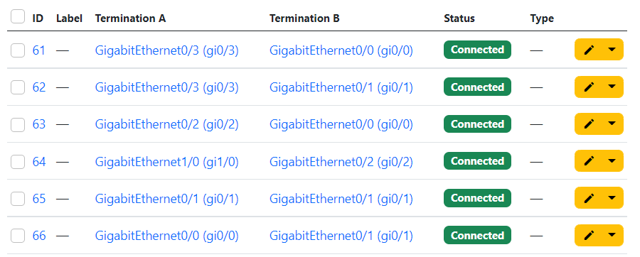
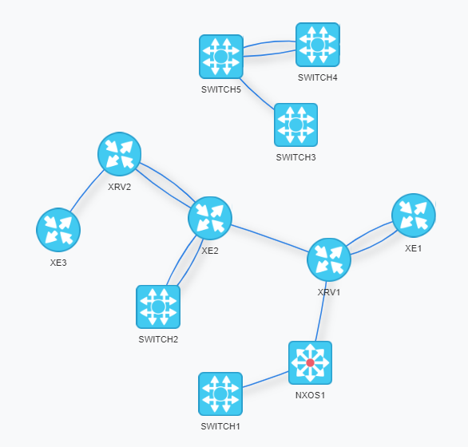
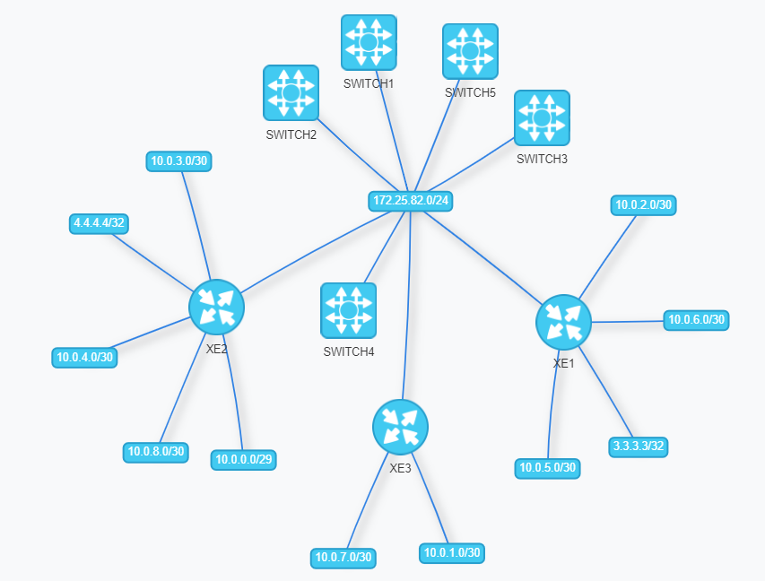

NetDoc: automated network discovery and documentation¶

Years ago I worked on a data center migration project. I was in charge to review network documentation, and automating the configuration, testing, and migration phases. There is no chance to review dozens of switches manually, so I wrote some Python scripts to get neighborship and configuration from switches, drawing Visio diagrams. In the end, I was able to discover an entire network topology in minutes.
NetDoc would be the industrialized, open-source tool available to the public to discover multi-vendor networks. It's based on NetBox, Netmiko, nornir, ntc-templates, and netbox-topology-view.
A next step would see draw.io integrated into netbox-topology-views to export diagrams in a reusable format.
Install¶
NetDoc requires a working NetBox instance. Please see NetBox, then see NetDoc. In this post, I'm using netbox 3.3.2.
Usage¶
Once we logged in we have to create a site. Then go to Plugins → Netdoc → Credentials and add or import all credentials used to log in to network devices. We can also import via CSV using the following format:
name,username,password,enable_password
ssh-admin-w-enable,admin,C1sco123,C1sco123
ssh-admin-wo-enable,admin,C1sco123,
Then we need to add/import at least one discoverable. A discoverable is a network node NetDoc can retrieve information from. Again we can import via CSV using the following format:
address,credential,mode,site
172.25.82.38,ssh-admin-w-enable,netmiko_cisco_nxos,Test Site
172.25.82.37,ssh-admin-w-enable,netmiko_cisco_nxos,Test Site
172.25.82.36,ssh-admin-w-enable,netmiko_cisco_nxos,Test Site
172.25.82.35,ssh-admin-w-enable,netmiko_cisco_nxos,Test Site
We need to edit those devices and make them discoverable. We can now start the discovery, selecting one or more discoverable and pressing the button.

We can follow the discovery process using journalctl:
$ journalctl -u netbox-rq -f
Aug 28 19:54:55 linux-station python3[306570]: multiple_tasks*******************
***********************************************
Aug 28 19:54:55 linux-station python3[306570]: * 172.25.82.35 ** changed : False
**********************************************
Aug 28 19:54:55 linux-station python3[306570]: vvvv multiple_tasks ** changed :
False vvvvvvvvvvvvvvvvvvvvvvvvvvvvvvvvvvvvvvvvv INFO
Aug 28 19:54:55 linux-station python3[306570]: ---- show running-config ** chang
ed : False ------------------------------------ INFO
Aug 28 19:54:55 linux-station python3[306570]: Building configuration...
Aug 28 19:54:55 linux-station python3[306570]:
Aug 28 19:54:55 linux-station python3[306570]: Current configuration : 3662 bytes
Aug 28 19:54:55 linux-station python3[306570]: !
Aug 28 19:54:55 linux-station python3[306570]: ! Last configuration change at 12:00:59 UTC Wed Jul 13 2022
Aug 28 19:54:55 linux-station python3[306570]: !
Aug 28 19:54:55 linux-station python3[306570]: version 15.2
The discovery scripts should populate the following netbox items:
- Devices
- Manufacturers
- Interfaces
- Cables
- IP Addresses
- Prefixes
- VRFs
- VLANs
Moreover, new discoverables detected via CDP/LLDP protocols will be automatically added: they can be discovered after reviewing the IP address and the discovery method.

The discovery process should bind a Device to each discoverable, but in case this is not happening (e.g. Cisco XR) we can bind them manually.
Additional info¶
NetDoc will also discovers ARP Table, MAC Address Table, Routing Table from each discoverable.

Finally, all data (logs) fetched by discoverables are stored and can be reviewed:
- Configuration bit is set if the log contains the discoverable configuration.
- Success bit is set if the command has returned a valid output.
- Parsed bit is set if the output has been successfully parsed.
- Ingested bit is set if the parsed output has been ingested to netbox.

L2 Network topology¶
Using CDP and LLDP NetDoc can discover L2 adjacencies. For each adjacency a cable is created:

Using the plugin netbox-topologyi-views we can automatically draw L2 topologies. Each device can be associated with a specific image using the Device Role attribute. Device roles must be created with one of the following slugs:
- access-switch
- backup
- core-switch
- distribution-switch
- firewall
- internal-switch
- isp-cpe-material
- non-racked-devices
- power-units
- role-unknown
- router
- server
- storage
- wan-network
- wireless-ap
Opening Plugins → Topology Views we can see a L2 topology diagram:

netbox-topology-views is currently working on netbox 3.2 only.
L3 Network topology¶
During my network assessment I need to draw L3 topology diagrams too. I forked netbox-topology-view, implementing the feature I need:

The L3 diagram is VRF aware: you need to manually update VRF on Prefixes (and you would also to update IP Addresses too).
Conclusions¶
NetDoc is in the alpha version. Currently supports Cisco devices only but can be extended. Even if it is alpha software, it is saving me a lot of time.
If you want to contribute, drop me a message. I don't consider myself a software developer and there are (for sure) a lot of bugs.